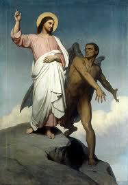

أحد التجربة
التجارب... كلمة تقلق كل من يسمعها,فقد مررنا جميعاً بالعديد من التجارب منها ما إنتهى بمرارة وآلم وآخرى إنتهت بفرح 
صديقي ... إن كنت قد مررت بإحدى هذه اللحظات إذاً تعالي معنا أنت مدعو لرحلة قصيرة قد تجد فيها إجابة لكل مايدور بذهنك من أسئلة إن رحلتنا قد ترفعك لقمة إحدى المرتفعات التي صعد إليها مخلصنا الصالح ليعرفنا ماهية التجارب ويرشدنا حتى نتعلم كيف نواجهها؟
إن بداية الرحلة كانت حينما " أصعد يسوع إلى البرية من الروح"(مت1:4) إنه روح الله هو من إقتاد المسيح لذلك الموضع ... " ليجرب من ابليس"(مت1:4) فلم تخلو حياة أي إنسان من التجارب حتي السيد المسيح نفسه كان قد جرب "مجرب في كل شيء مثلنا بلا خطية"(عب15:4) فلا يظن أحد أن التجارب والضيقات هي للخطاه بسبب خطاياهم إنما التجارب هي لجميع الناس وبالأكثر الأبرار والقديسين.
ولكي يطمئن قلبنا أثناء الحروب والتجارب فقد وضع لنا الكتاب أربعة قواعد تمنحنا سلاماً أثناء التجربة:-
- إنه لا يسمح لنا أن نجرب فوق طاقتنا.
- تأتي التجارب ومعها المنفذ.
- تأتي التجارب للخير وتنتهي بالخير.
- أي تجربة لها زماناً محدداً تنتهي بعده فلا توجد ضيقة دائمة مصيرها تنتهي.
لاحظ: أن التجارب قد تأتي بحسد من الشيطان في أيام الصوم والجهاد الروحي وهذا ما حدث مع ربنا يسوع المسيح نفسة حيث حاربه الشيطان في صومه الأربعيني.
" فبعدما صام أربعين نهاراً وأربعين ليلة جاع أخيراً"(مت 2:4)
- صام السيد المسيح ليكمل بصومه بر الصوم الذي عجز آدم عن إتمامه (في أن يمتنع من أكل الشجرة)
- أربعين نهاراً وأربعين ليلة : فكما صام موسى النبي أربعين يوماً قبل إستلامه الشريعة (خر24) والأرض أيضاً تطهرت من الطوفان بعد أربعين يوم, لأن العدد أربعين يرمز إلى البر والفضيلة.
" فتقدم إليه المجرب"(مت3:4) لأن الشيطان شغوف بمحاربة الأقوياء كما حارب أيوب لأنه قوي, وقاتل سليمان لأنه أحكم الناس هكذا تجرأ وتقدم لمحاربة السيد المسيح قائلاً" إن كنت إبن الله"(مت3:4) إن هذه الجملة الصغيرة هي المشكلة التي صارت تؤرقه منذ سماعه قول المعمدان عن السيد المسيح" هوذا حمل الله الذي يرفع خطية العالم."(يو29:1) ظل يفكر متحيراً, أهو هذا الفادي المنتظر؟ فإن كان هو هو...لأمكنه أن يصنع المعجزات بمجرد أن يأمر لذا قال للمسيح "قل أن تصير هذه الحجارة خبزاً"(مت3:4) فكان الرد " ليس بالخبز وحده يحيا الإنسان"(مت4:4) لقد بدا إقتراح الشيطان أنه للخيروكأنه يبحث عن الصالح والمفيد في ظل هذه الظروف وهو جوع السيد المسيح, لكن قصد الشيطان من هذا العرض إنه لأمر خطير, لأنه إذا إستخدم المسيح لاهوته من أجل التخلص من آلم الجوع فما المانع أن يتخلص المخلص من كل آلم حتي آلام الصلب وبذلك يتحول التجسد والفداء إلى شكليات...
" ثم أخذه إبليس إلى المدينة المقدسة وأوقفه على جناح الهيكل"(مت5:4) عجيب هو الشيطان فهو يمكن أن يحارب في كل مكان بكل جرأة حتى في المدينة المقدسة والهيكل المقدس وحتى في الأوقات المقدسة كالصوم!
وكانت تجربته في هذه المرة هي " إن كنت إبن الله فإطرح نفسك إلى أسفل.لأنه مكتوب أنه يوصي ملائكته بك.فعلى أياديهم يحملونك لكي لا تصدم بحجر رجلك"(مت6:4) وكعادة الشيطان إنه يخادع في إستخدامه لآيات الكتاب فلا يذكرها بطريقة سليمة لأن النص الأصلي للآية " ولا تدنو ضربة من خيمتك. لأنه يوصي ملائكته بك لكي يحفظوك في كل طرقك. على الأيدي يحملونك لئلا تصدم بحجر رجلك"(مز10:91-12) فالحديث هنا ليس عن جبل يلقي الشخص نفسه منه, إنما عن خيمتك وطرقك, فيما أنت سائر, فكانت إجابة الرب " مكتوب أيضا لا تجرب الرب إلهك"(مت7:4) إن الشيطان أراد أن السيد المسيح يجرب محبة الآب فيرى هل إذا القى نفسه من على الجبل, يرسل ملائكته ليحملوه. لكن محبة الله ليست موضع شك ولا موضع إثبات لكي نجربه فيثبتها لنا بالعطايا والمنح...
" ثم أخذهً أيضاً إبليس إلى جبل عال جداً وأراه جميع ممالك العالم ومجدها , وقال له أعطيك هذه جميعها إن خررت وسجدت لي"(مت8:4 ,9) إنها تجربة الملك حيث جاء الشيطان ليعرض كل ممالك العالم , ولكن السيد رفض هذا الملك لأنه لم يأتي ليملك ملكاً عالميأ "مملكتي ليست من هذا العالم"(يو36:18)
ولأن الشيطان لايعطي أبداً وإنما يأخذ , وإن أعطي فإنه لا يعطي مجاناً إلا أنه في هذه المرة طلب ما لايصدقه أحد"إن خررت وسجدت لي" ولعله كان يعرف أن هذا العرض مستحيل لكنه لم يشأ ان يخرج مهزوماً بدون إنتقان.
أما عن رد المخلص فقد كان قوياً وحاسماً... حين قال... "أذهب ياشيطان"(مت10:4)
إن الرب لم يناقشه فيما يدعيه من قدرة وإنما طردة ... ليعلمنا كيف نطرد الشيطان نحن أيضاً.والمهم أن يقول الإنسان إذهب ياشيطان ليس بلسانه فقط, إنما من كل القلب, وبكل الإرادة, وفي حزم وبجدية. حينئذ تركه إبليس.
"وإذا ملائكة قد جاءت فصارت تخدمه" (مت11:4)